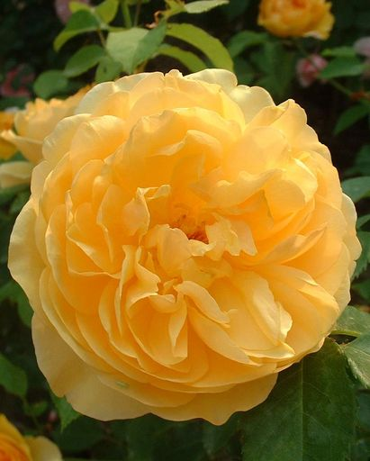
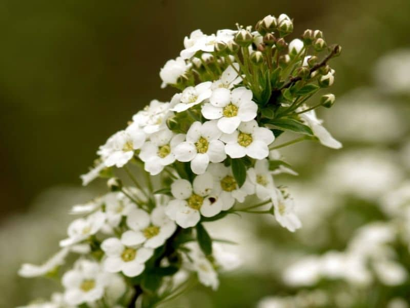

Flowers shop


Roses are the antidote to the odorless, tightly bound rosebuds you see at the supermarket flower stand
English roses
Roses are the antidote to the odorless, tightly bound rosebuds you see at the supermarket flower stand
English Roses
They grow up to 8 feet tall and 3 feet wide. Hybrid teas aren’t known for being disease resistant
Tea Roses
Originating in China, these roses are the O.G. of today’s classic florist rose form.

Alyssum or sweet alyssum is a hardy plant that features heat and drought resistance. Often grown as a component of alpine rock gardens, this plant can thrive in a wide range of regions across the United States, where it has become naturalized. Members of the mustard family, these plants smell sweet.
Alyssum
Alyssum or sweet alyssum is a hardy plant that features heat and drought resistance. Often grown as a component of alpine rock gardens, this plant can thrive in a wide range of regions across the United States, where it has become naturalized. Members of the mustard family, these plants smell sweet.
Black-eyed Susan
The Black-eyed Susan is a type of coneflower that also goes by the name Rudbeckia. These plants are similar to daisies but have bright yellow-orange flowers with a black center.
Chrysanthemum
Chrysanthemums originated thousands of years ago in China before being brought over to Japan. They are commonly used as a cut flower in arrangements or grown as a border flower.
Cosmos
The Cosmos is one of those perennial flowering plants that delights the eye with a simple daisy-type flower and a pleasant, wispy foliage. There is also a variety that comes in a cupcake shape with double petals. The plants are well adapted for containers and as border plants. Blooming lasts from the middle of summer to relativity late in the season.
Crocosmia
The Crocosmia is also known as the montbretia. These plants have a tendency to become invasive. The flowers and foliage of these plants arch slightly, with some ending up at 2 to 3 feet tall.

Dahlia
The Dahlia is a tuberous perennial flower that is native to Mexico and South America. The plants form leafy stems and come in sizes from dwarf to large with a huge variety of flower shapes.
Daisy
Daisies belong to the family Bellis and are perennials. These spread and come in a variety of colors, such as white and pink, or even bicolored. Petals range depending on the species and can be tubular or even needle-like. They grow well with plants like tulips in sunny and warm locations in your garden.